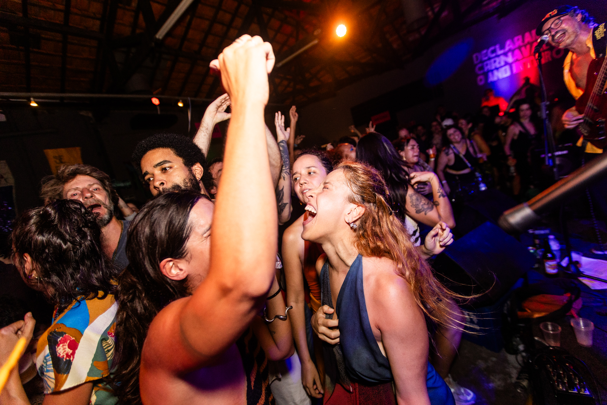
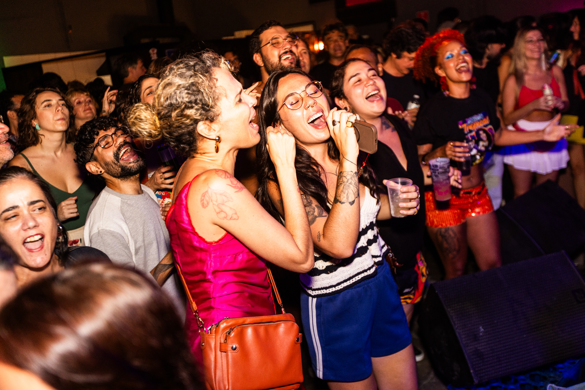

Experiência ao vivo
Energia, entrega e conexão direta com o público.

Energia & Conexão
O show da Lixinho Tropical é marcado por energia, entrega e conexão direta com o público. As canções autorais conduzem a experiência, enquanto releituras de músicas consagradas ampliam o repertório afetivo da apresentação.
A banda também recria clássicos do pop, do rock e da música brasileira a partir de sua própria identidade — misturando referências, experimentando sonoridades e convidando o público ao novo.

Baile Dançante
O baile da Lixinho Tropical é dançante, quente e solar — um convite ao encontro, ao afeto e ao movimento. Um retrato vibrante do Brasil e da América do Sul, principais fontes de inspiração da banda.
Em "Usa-me", o público canta em coro e afirma o respeito ao próprio corpo e à sexualidade; em "Oxe", a pista se aproxima e dança junto; já "Me Faz um PIX" provoca identificação e humor ao retratar situações cotidianas.
Repertório em Destaque
Formatos de Show
Formação base com Déborah, Aragão e Magrão. Ideal para palcos menores, eventos intimistas e festivais.
Com baterista, sanfoneiro e tecladista. Para grandes palcos, festivais e eventos corporativos de alto impacto.
Série de apresentações semanais ou mensais em casas de show e bares. Contato direto para negociação.